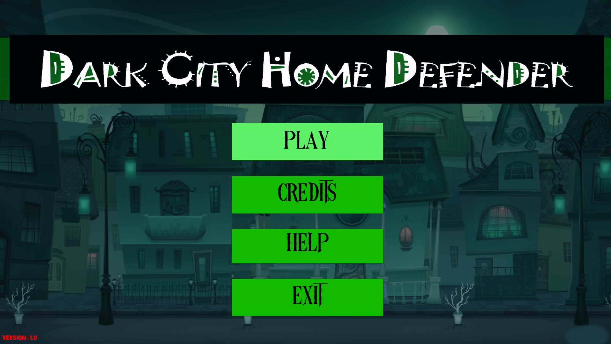
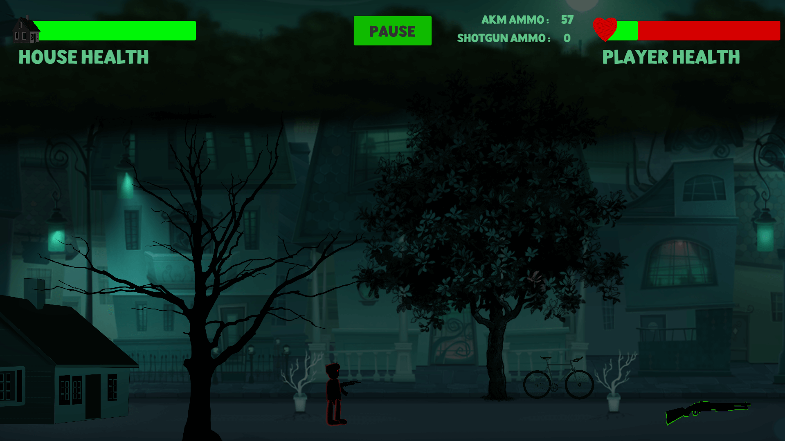
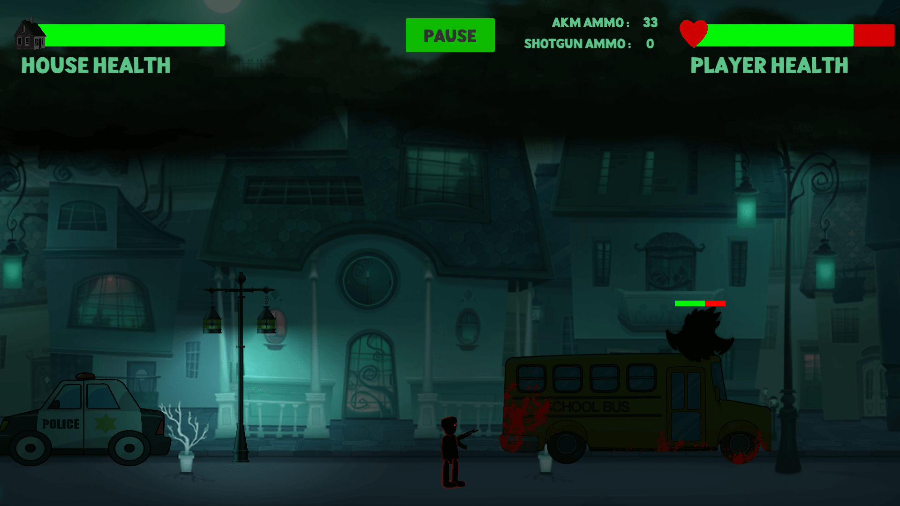
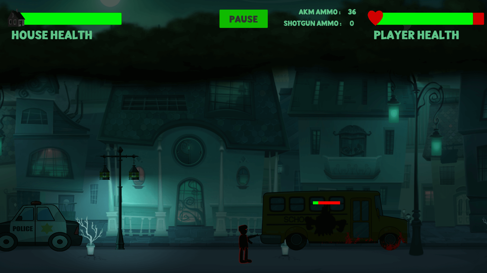

Dark City Defender
Dark City Defender is a Game Jam entry featuring a 2D survival game where you play as the city's protector, fighting against dark enemy creatures. Built in Unity with a custom mouse-position shooting system and dynamic special effects.





🧠 Core Features
- Wave-based survival gameplay - eliminate all enemies to advance
- Precision mouse-aimed shooting system for accurate 2D combat
- Dynamic blood effects with sprite mask splatters on environment objects
- Random weapon and ammo pickups spawn throughout the battlefield
- Immersive environments built with Unity's URP 2D rendering pipeline
- Atmospheric sound design enhancing the combat experience
🧩 Technologies Used
📜 About the Game
This game was developed as part of a Game Jam challenge, creating an engaging 2D survival experience within a limited timeframe. Players take on the role of the city's defender, protecting against invading dark creatures. Each wave must be cleared of all enemies before they overrun the city—failure means the destruction of your home. Survival depends on scavenging ammunition and weapons scattered across the area. The game features a custom mouse-aimed shooting system, dynamic blood effects using sprite masks, and immersive environments created with Unity's URP 2D rendering pipeline. Atmospheric sound design enhances the intensity, delivering an engaging combat experience.
💡 Development Challenges
- Mouse-Aimed Shooting: Calculating accurate aim direction and projectile trajectory while handling player sprite flipping
- Animation Blending: Integrating melee attack animations that properly override idle and walking states without breaking transitions
- Flying Enemy AI: Programming intelligent flight patterns with attack behaviors and pathfinding toward invasion targets
- Game Jam Time Management: Balancing gameplay difficulty, weapon variety, and enemy progression within a tight deadline
- Core Systems: Implementing interconnected spawn systems, wave management logic, and dynamic UI updates
🎮 Availability
Available as a playable game on Itch.io and an open-source project on GitHub for developers and Unity enthusiasts.